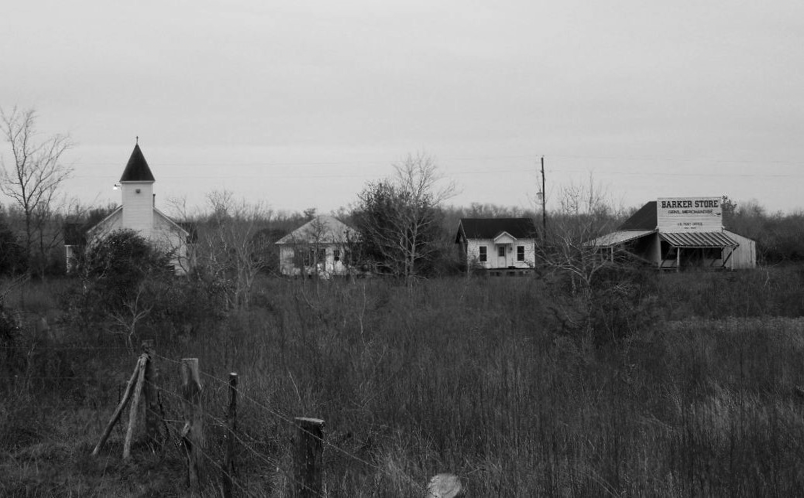
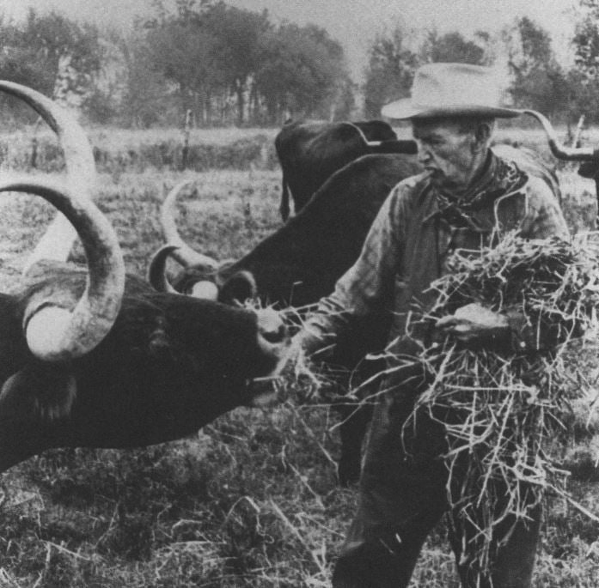
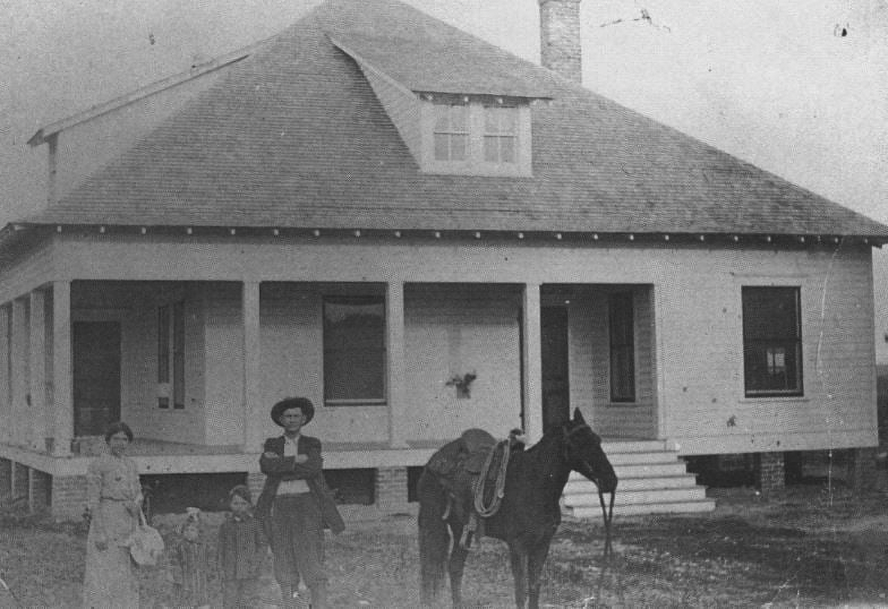

Home to James E. Taylor High School
Echoes from the Barker Settlement
This quiet scene of the Barker Store, a church, and modest homes, shows a glimpse into a once thriving rural outpost in the LH7 Ranch area. The presence of a U.S. Post Office sign hints at its role as a lifeline for local families. According to "The LH7 Ranch in Houston's Shadow", when the Katy Railroad had its tracks laid, the new general store was located near it, and this general store housed the United States Post Office. Like this general store, most businesses were built by the raildroad station as the railroad gave access to raw materials at a quick speed. Though time has weathered down the buildings and emptied the streets, it shows the spirit of early Texas settlements. The post office had been moved and later demolished. Fortunately, the church and some of the homes are still seen today as it has been moved to the property of Iglesia Sobre La Roca, Katy.

Image Date: 2005 · Image courtesy of James E. Taylor High School
Sources: Sizemore, Deborah Lightfoot. "The LH7 Ranch in Houston's Shadow: The E. H. Marks' Legacy from Longhorns to the Salt Grass Trail". UNT Press, 1991.
Feeding Time at LH7 Ranch
E.H Marks was an early Texas rancher whose LH7 Ranch operated along routes by the Salt Grass Trail, a cattle-driving corridor across the coastal plains. Native salt grasses sustained herds and shaped the movement of cattle toward markets and rail lines. The LH7 Ranch, established in 1907, was the largest ranch in the area until its shutdown in 1945 when the land was claimed. In this photograph, E. H. Marks stands among his cattle, offering hay to his favorite longhorn with confidence of a seasoned rancher. Scenes like this were everyday realities in Old Katy as ranching was not just work, but a legacy passed down through generations.

Image Date: 1930s · Image courtesy of James E. Taylor High School
The Marks Family Homestead
This photograph captures E.H. Marks with his family standing proudly before their home in Addicks. The saddled horse beside them shows the daily life in early Katy in ranching and rural living. More than a portrait, this image preserves the legacy of the Mark's family and their role.

Image Date: 1920-1930s · Image courtesy of James E. Taylor High School
The Katy Hotel
The Katy Hotel was opened in 1897 by J.C. Owens on the Northeast corner of Avenue A and Second Street. In 1908, ownership passed to David Jacquemin and his wife, Mary. They managed the hotel with precision and hospitality of the Harvey Houses. After being purchased by August Marks in 1910, the hotel operated until the 1930s. It closed and was reused by various businesses. The structure was moved in 1966 and later demolished. At the original location, a church has been built.
Before image courtesy of The Johnny Nelson Katy Heritage Museum
Katy Elementary School
The first Katy Elementary School began in 1898 serving the small farming and railroad communities. It expanded as the town grew showing the beginning of organized education in Katy. A new building was constructed on the same site in 1965 with renovations in 1989 and 1995.
Before image courtesy of The Johnny Nelson Katy Heritage Museum
Stewart and Wright Druggists
Founded by Dr. J. M. Stewart and John H. Wright in 1904, Stewart and Wright Druggists opened its doors at the Southeast corner of Second Street and Avenue B. The pharmacy served the growing Katy community for decades until its closure in 1991. Now, The McMeans Brothers Landscape Designs stands there.
Before image courtesy of The Johnny Nelson Katy Heritage Museum
Viewing West from Avenue A down 2nd Street
Viewing west from Avenue A down 2nd street, this scene reflects the growth of the city and town's heart over time.
Before image courtesy of The Johnny Nelson Katy Heritage Museum
Hotel Clardy
Hotel Clardy, opened by Lafayette W. Clardy, his wife Matilda, and daughter Nellie in 1897, was the second original hotel in Old Katy. Matilda ran the office and later was the bookkeeper of the Katy Rice Mill. The Clardys closed the hotel in 1916 and moved to Pasadena, leaving the building to be demolished. Now, a Valero Gas Station and a few convenience stores stand in that location.
Before image courtesy of The Johnny Nelson Katy Heritage Museum
Rice Mill - Schoor Milling Company
Built by the Schoor Milling Company, this rice mill was one of a dozen in the region. After being converted into a warehouse and undergoing several ownership changes, it was demolished in the late 1970s to early 1980s. A McDonald's now stands at this location.
Before image courtesy of The Johnny Nelson Katy Heritage Museum
Missouri-Kansas-Texas Railroad Depot
The Missouri-Kansas-Texas (MKT) Railroad Depot, constructed in 1898, served residents and attracted settlers. After passenger service ended, the depot was relocated to the Katy City Park in 1957 and then moved again in 2005 to its current spot to avoid demolition. Now, it acts as a museum and visitor center for the historic town.
Before image courtesy of The Johnny Nelson Katy Heritage Museum